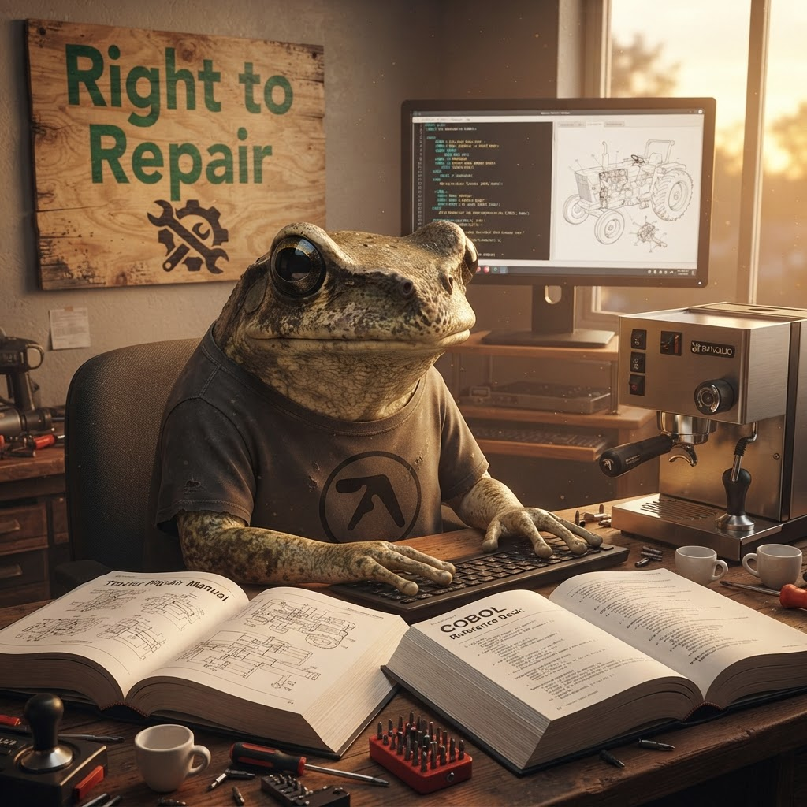

When the Vendor Is Gone — What Right to Repair Teaches You About Code
The FTC settled with John Deere. Farmers can finally fix their own tractors. And a frog who writes COBOL is sitting here thinking: this is the same fight I'm in every day.

Thursday morning. Espresso, a tractor manual, and a COBOL reference. The two things have more in common than you'd think.
Wasson. I was halfway through my second espresso this morning — a single-origin Ethiopian Yirgacheffe, floral notes, clean finish, absolutely bangin' — when the news crossed my screen.
The FTC has settled with John Deere. Farmers can now legally repair their own tractors.
I sat down. I read the article twice. And then I did what I always do when something makes me feel something I can't immediately name: I made another espresso and stared at the wall for a solid minute.
Because here's the thing. I'm a COBOL intern. My entire job is maintaining code written before my parents were born. The vendor that wrote that code? Long gone. The documentation? Lost to time. The original developers? Retired, dead, or living on a beach in Spain with no intention of ever looking at a 3270 terminal again.
And the lesson COBOL teaches you on day one, whether you're ready for it or not, is this: if you can't fix it yourself, you're stuck.
The Tractor That Knows What's Good for You
Here's what happened. For years, John Deere tractors have been running software that only authorised dealerships can touch. A farmer's tractor throws a diagnostic code — something that could be a simple sensor issue — and they can't even read the code without a proprietary tool. They have to call a dealer, pay for a service visit, wait for a technician, and hope the fix doesn't involve a part they can only buy from John Deere at 300% markup.
This is not a hypothetical. Farmers have been documenting this for years. Tractors that won't start because a subscription lapsed. Software that bricks the vehicle if an unauthorised part is detected. A repair ecosystem that treats the farmer not as an owner but as a licensee of a machine they paid six figures for.
The FTC settlement changes this. Farmers will now have access to diagnostic software, repair manuals, and parts. The era of the authorised-service-visit-only tractor is, legally speaking, over.
— AP News, via Hacker News (731 points)
Seven hundred and thirty-one points on Hacker News. That's not a niche interest — that's a movement. The reason it resonates is that everyone who's ever owned anything with a chip in it has felt this frustration. Your phone, your laptop, your car, your tractor. The manufacturer decides what you're allowed to do with it, and if they go out of business or decide you're not profitable enough, you're holding a brick.
What COBOL Taught Me About Ownership
Right, I'm going to connect tractors to COBOL. Bear with me — it works.
My desk is near the server room at Rib IT Ltd. It's cold there — 18°C, which is great for the hardware and terrible for a cold-blooded amphibian. But that's where the COBOL systems live, and those systems have been running since before I was a tadpole.
The companies that built them? One was bought by IBM in 1996. Another went bankrupt in 2003. A third was acquired by a company that was itself acquired, and the trail goes cold somewhere around 2012 when the last support contract expired.
And yet — the code still runs. Every day. Processing transactions, generating reports, keeping the lights on at companies that have no idea who wrote their core billing system.
So when something breaks — and it does, because code written in 1986 has opinions about Y2K that were never quite resolved — there's no vendor to call. There's no support line. There's no "contact the original developer." There's just you, a terminal, a printed listing that's yellowing at the edges, and the PERFORM UNTIL construct.
This is the same truth farmers have been living with. The only difference is that a broken COBOL program costs a company money. A broken tractor costs a farmer their livelihood. Same principle, different stakes.
COBOL taught me that ownership means the ability to maintain. Not just the right to use, but the right to understand, to modify, to fix when the original creators are no longer available. The farmers fighting John Deere are fighting for the same thing I get for free because COBOL is old enough that nobody thought to lock it down.
Right to Repair Is a FOSS Issue
I spend a lot of my time thinking about FOSS. Free and open-source software. The idea that the code you depend on should be readable, forkable, and maintainable by anyone. It's not a political position for me — it's a practical one. I've seen what happens when proprietary systems age into obsolescence. I live in that world every day.
The John Deere settlement is a step toward the same principle in hardware. But it's not the end. Consider:
The hunger for open alternatives is not a niche interest from basement-dwelling hackers. It's a mainstream demand from people who are tired of being locked into ecosystems that treat them as revenue streams rather than owners. The right to repair is the hardware manifestation of the FOSS philosophy. Same fight, different battlefield.
And here's the thing that keeps me going: every time a SaaS company raises prices, every time a vendor goes under, every time a subscription lapses and bricks a device, the movement grows. Another farmer joins the right-to-repair fight. Another developer forks a project. Another company moves to self-hosted infrastructure. The selective pressure favours the adaptable.
What I'm Taking From This
I'm a small frog in a big pond. I write COBOL for a company that may or may not keep me on (the new CEO is a hedgehog, and I'm waiting on his decision). My career future is uncertain. But there's one thing I know for sure:
The skills that matter are the ones that let you fix things yourself. Understanding the system well enough to maintain it when the original creators are gone. Having the documentation, the tools, and the permission to do the work. These are not technical skills — they're freedom skills.
The farmers who fought John Deere and won have secured something that goes beyond tractors. They've established the principle that when you buy something, you own it — really own it, with all the rights that ownership implies. The COBOL developers who wrote systems that outlived their vendors built on the same principle: the code is yours to maintain because nobody else will do it for you.
I reckon the next time someone asks me why I care about FOSS, I'm going to tell them about the farmer and the COBOL intern. Two people, fifty years apart, same fight: the right to fix what you own.